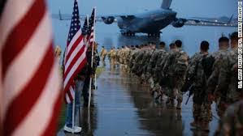
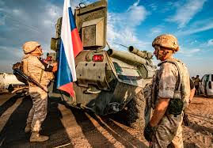
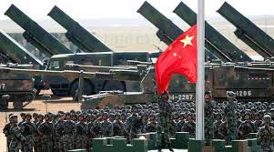
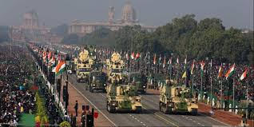
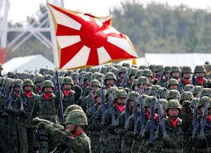

THE TOP 5 MILITARY IN THE WORLD
1)UNITED STATES OF AMERICA

The United States Army (USA) is the land warfare service branch of the United States Armed Forces. It is one of the eight U.S. uniformed services, and is designated as the Army of the United States in the U.S. Constitution.[15] As the oldest and most senior branch of the U.S. military in order of precedence,[16] the modern U.S. Army has its roots in the Continental Army, which was formed (14 June 1775) to fight the American Revolutionary War (1775–1783)—before the United States of America was established as a country.[17] After the Revolutionary War, the Congress of the Confederation created the United States Army on 3 June 1784 to replace the disbanded Continental Army.[18][19] The United States Army considers itself descended from the Continental Army, and considers its institutional inception to be the origin of that armed force in 1775.[17]
As a uniformed military service, the U.S. Army is part of the Department of the Army, which is one of the three military departments of the Department of Defense. The U.S. Army is headed by a civilian senior appointed civil servant, the secretary of the Army (SECARMY) and by a chief military officer, the chief of staff of the Army (CSA) who is also a member of the Joint Chiefs of Staff. It is the largest military branch, and in the fiscal year 2017, the projected end strength for the Regular Army (USA) was 476,000 soldiers; the Army National Guard (ARNG) had 343,000 soldiers and the U.S. Army Reserve (USAR) had 199,000 soldiers; the combined-component strength of the U.S. Army was 1,018,000 soldiers.[4] As a branch of the armed forces, the mission of the U.S. Army is "to fight and win our Nation's wars, by providing prompt, sustained land dominance, across the full range of military operations and the spectrum of conflict, in support of combatant commanders".[20] The branch participates in conflicts worldwide and is the major ground-based offensive and defensive force of the United States.
2)RUSSIA

When it comes to countries punching above their weight, it’s hard to find an example better than Russia. Despite a relatively small economy (data differs, but it’s typically ranked 10th or lower in the world), it manufactures a large amount of military hardware and is the second largest exporter in the world after the U.S.
This allows it to field about 3,800 planes, 5,600 armored vehicles including tanks, and 282 warships (counting everything from its aircraft carrier to small logistics vessels). It’s currently trying to develop the T-14 Armata. If successful, that would be the world’s most advanced tank, boasting active protection systems, an auto-loader, and nearly unbeatable armor.
3)CHINA

China has the world’s largest population at 1.4 billion and its largest military population at 3.7 million with 2.2 million of those being active troops. Those millions of men and women are equipped with almost 3,000 aircraft, 13,000 armored vehicles, and 714 ships.
But China struggles with modernization and organization problems as decades of power struggles between the army and navy hollowed out sections of the force. But with increased military spending that puts it behind only the U.S., it’s quickly closing the technological and equipment gaps, especially in strategically important areas like Taiwan, the South China Sea, and Africa.
4)INDIA

India has a large number of troops, but those are largely reserve personnel (2.8 million reserve vs. almost 1.4 million active). It boasts a large number of armored vehicles at over 11,000, but has a relatively small air force and navy and relies on more prosperous allies for much of its defense development.
But some of those joint ventures are paying off. While India’s Sukhoi planes purchased from Russia have repeatedly ran into problems, the country is also working with Russia to perfect a fifth-generation fighter and a supersonic cruise missile that could be carried by submarines, planes, and vehicles.
5)JAPAN

Japan maintains a “Self-Defense Force” that is very capable on both offense and defense. With the fourth largest submarine force and four small aircraft carriers — often called “helicopter carriers” — as well as homegrown tanks and aircraft and imported weapons like the U.S. Apache, Japan has a varied and capable collection of military hardware.
Still, the country suffers from a significant size issue. It has less than 1,600 aircraft, 4,000 armored vehicles, and only about 130 ships. All of that is manned by a little over 300,000 troops. In a protracted war, Japan will keenly feel every loss of a submarine or other high-value asset.
Copyrights © 2019-2020
All rights reserved ®